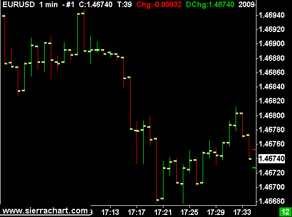

Chart Menu
- Chart Settings
- Graph Draw Types
- Graphics Settings - Chart
- Use Evening/Full Session
- Lock Fill Space
- Horizontal Grid
- Vertical Grid
- Logarithmic Scale
- Show Bid and Ask Lines
- Bid Ask Average Line
- Add Symbol Alert
- Open Time and Sales Window
- Open Market Depth Window
- Replay Chart
- Reload and Recalculate
- Recalculate
- Only Symbols in Watch List
- Associated Watch List
- Next File
- Previous File
- Scan Menu Commands
- Linking
- Show Title Bar
- Show Scrollbar
- Show Menu
- Bar Periods
- Bar Periods: Daily
- Bar Periods: Weekly
- Bar Periods: Monthly
- Bar Periods: Quarterly
- Bar Periods: Yearly
- Bar Periods: 1 Minute
- Bar Periods: 5 Minutes
- Bar Periods: 10 Minutes
- Bar Periods: 15 Minutes
- Bar Periods: 30 Minutes
- Bar Periods: 1 Hour
- Bar Periods: 2 Hours
- Bar Periods: 3 Hours
- Bar Periods: 4 Hours
- Bar Periods: Custom
- Quickly Changing Bar Period
- Perform Futures Symbol Rollover
- Update Chart Drawings to Current Symbol
- Show Rollover Dates
- Duplicate Chart
- Duplicate Chart To Chartbook
- Duplicate All Charts to Chartbook
- Detach/Attach Chart Window
- Scale
- Interactive Scaling Mode
- Reset Scales
- Reset Bar Size/Spacing/Scale
- Reset Child Window
- Reset TPO Chart
- Hide Chart Drawings
- Hide Drawings From Other Charts
- Goto Date/Time
- Page Scroll Left
- Page Scroll Right
- Bar Spacing
- Decrease Bar Width
- Increase Bar Width
- Goto Beginning of Chart
- Goto End of Chart
- Scroll All Charts To End
- Goto Spreadsheet
This page documents all of the commands on the Chart Menu.
You are able to use Keyboard Shortcuts that can be used from your keyboard to invoke these commands.
Additionally, all of these commands can be added to the Control Bars for quick access on a Control Bar.
Chart Settings (Chart menu)
This command opens the Chart Settings window for the active chart. For complete documentation, refer to the Chart Settings page.
Graph Draw Types (Chart menu)
This submenu lists all of the supported Graph Draw Types for the main price graph that you can choose from. Simply select one from the submenu to change to that Graph Draw Type.
If you want to hide the chart, you can select Blank.
Graphics Settings - Chart(Chart menu)
This command opens the Graphics Settings window for the active chart window which allows you to customize Colors, Widths, and the Chart Font for the active chart. For complete documentation, refer to the Graphics Settings page.
Use Evening/Full Session (Chart menu)
When this option is checked, this will activate and apply the Evening Start Time and Evening End Time defined in Chart Settings. This is useful for quickly switching between the Day session and the Full session. For this command to be useful, you need to go to Chart >> Chart Settings. Set the Start Time and End Time to the day session. Enable the Use Evening Session Times checkbox. Enter the Evening Session Start and End times. Press OK. You can then include or remove the Evening Session easily with this command. There is a shortcut key to toggle this as well for very fast switching. Refer to Customizing Keyboard Shortcuts.
Lock Fill Space (Chart menu)
Locks or unlocks the Fill Space on the right side of the chart. For more details, refer to Scrolling The Chart.
Horizontal Grid (Chart menu)
The Horizontal Grid submenu contains several commands for displaying or hiding the horizontal chart grid. To enable this grid, select Chart >> Horizontal Grid >> All Regions on the menu. To display the horizontal grid for a specific Chart Region, then select the corresponding Region # from the Horizontal Grid submenu.
The chart grid lines are drawn at each price label displayed on the right side of the chart window by default. The price labels are derived from the chart Tick Size setting.
For the main price graph, you can change the horizontal grid spacing by selecting Chart >> Chart Settings >> Scale on the menu. Press the Scale button. Set the Horizontal Grid Increment to the required grid interval, or use 0 to make it automatic.
To change the horizontal grid spacing for a study, select Analysis >> Studies on the menu. Select the study in the Studies to Graph list and press on the Settings button. Press the Scale button. Set the Horizontal Grid Increment to the desired grid interval, or use 0 to make it automatic.
To change the Color, Line Width and Line Style of the Horizontal Grid lines, select Global Settings >> Graphics Settings on the menu.
Select Chart Grid from the Colors and Widths list box and change the Color, Line Width and Line Style to what you require. Make sure the Chart Grid color is different than the Chart Background color so that the grid is visible.
To change these for an individual chart only, select Chart >> Graphics Settings and set these to what you require for that individual chart. For additional information, refer to Graphics Settings.
Vertical Grid (Chart menu)
The Vertical Grid command displays or hides the vertical chart grid. To enable this grid, select Chart >> Vertical Grid menu.
To change the spacing between lines, select Chart >> Chart Settings >> Grid from the menu and change the settings in the Show Vertical Grid section. Refer to the Show Vertical Grid section on Chart Settings. There are many interval settings to choose.
To change the Color, Line Width and Line Style of the Vertical Grid lines, select Global Settings >> Graphics Settings on the menu. Select Chart Grid from the Colors and Widths list box and change the Color, Line Width and Line Style to what you require. To change these for an individual chart only, select Chart >> Graphics Settings and set these to what you require for that individual chart. For additional information, refer to Graphics Settings.
Vertical grid lines are also displayed in the Right Side Fill Space area of the chart, also known as the forward projection area, which is after the last bar when there is additional fill space after the last bar the chart. When the vertical grid lines are based upon time and not Pixels or Bars, the spacing between the vertical lines is based upon the Date-Times of each column in the Right Side Fill Space and the time interval you have specified for the Vertical Grid.
The Date-Times of those columns is based upon the average time of the chart bars since the beginning of the chart. So this can affect the placement of the Vertical Grid lines.
If the Vertical Grid option does not give you the grid lines at the times you require and you want vertical grid lines at a specific time or times, then you will need to use the Time Lines study which is added through Analysis >> Studies. This study can be added multiple times to the chart. It gives you the flexibility to place vertical lines at one or more times on the chart.
Chart DOM Vertical Lines
It is also supported on the Chart DOM to add vertical lines between the columns. To do this select Trade >> Customize Chart/Trade DOM Columns . Enable the Show Market Data Column Vertical Lines (Global Setting, Chart DOM) option.
Logarithmic Scale (Chart menu)
Toggles between linear and logarithmic scale for the price graph. The scale type can also be set by pressing the Scale button in the Chart Settings window.
Show Bid and Ask Lines (Chart menu)
{kind=link}
When this option is enabled, the Bid and Ask prices will be drawn as a short lines on the right side of the chart beside the Values Scale.
To change the position of these lines to be drawn on the last bar, select Global Settings >> Graphics Settings on the menu. Enable the Draw Bid and Ask Lines at Last Bar When Enabled option.
The color and width of these lines is set through Global Settings >> Graphics Settings. In the Colors and Widths list, select DOM Ask Line or DOM Bid Line. Press the Color button to change the color for the selected item. In the Width box, set the width in pixels.
In addition to this feature, there is also the Bid and Ask Prices study that can be used as an alternative to this. Refer to Bid and Ask Prices.
Bid Ask Average Line (Chart menu)
Displays or hides a horizontal line drawn on the last bar in the chart which indicates the average of the bid and ask for the symbol. If either the bid or ask is zero, then this will indicate the last trade price.
The color and width can be set under Global Settings >> Graphics Settings. In the list of graphics objects select Bid Ask Average Line. Press the colored button to change the color. In the Width box, set the width in pixels.
Add Symbol Alert (Chart menu)
Opens the Add Symbol Alert window. For more information, refer to Add Symbol Alert.
Open Time and Sales Window (Chart menu)
Opens a Time and Sales window for the chart.
Open Market Depth Window (Chart menu)
Opens a Market Depth window for the chart.
Replay Chart (Chart menu)
This is a submenu with the following commands:
Replay Chart (Control Panel) (Chart >> Replay Chart menu)
This command opens the Chart Replay window. For complete instructions, refer to Replaying Charts.
Play/Pause (Chart >> Replay Chart menu)
This command starts or pauses the replay of a chart.
Stop (Chart >> Replay Chart menu)
This command stops the replay of a chart and ends the replay mode.
Reset Replay Control Panel Window (Chart >> Replay Chart menu)
This command resets the position of the replay control panel window to the default which will put it on your primary monitor near the top left.
This is necessary to do when the replay control panel window has become positioned offscreen which can have various causes. One such cause is when your monitor configuration has changed. And the previous position is no longer in a visible area of your monitors.
Reload and Recalculate (Chart menu)
This command reloads all of the data from the chart data file on your disk drive and fully recalculates all studies on the chart. This does not cause any request of historical data from the remote Data or Trading service server.
Recalculate (Chart menu)
This command will fully recalculate all of the studies on the chart.
Only Symbols in Watch List (Chart menu)
When this option is checked, the Previous File, Next File, and Start Scan commands only cycle through symbols within the charts Associated Watch List. Otherwise, these commands cycle through all symbols you have a data file for in the Sierra Chart Data Files Folder.
Associated Watch List (Chart menu)
The documentation for the Associated Watch List can be found in the Using the Associated Watch List section.
Next File (Chart menu)
Refer to the Moving through the Symbols in the Associated Watch List section for complete documentation for this menu command.
Previous File (Chart menu)
Refer to the Moving through the Symbols in the Associated Watch List section for complete documentation for this menu command.
Scan Menu Commands (Chart >> Start Scan, Chart >> Stop Scan)
When using the Spreadsheet System/Alert study on a chart, you have specified a Simple Alert condition formula on a study in a chart, or you are using an Advanced Custom Study on a chart that uses the sc.SetAlert() function, then all of these System or Alert Conditions are continuously monitored on the last bar/column in a chart if the chart is open and will generate alerts when they are TRUE.
It is also supported to scan for these System or Alert Conditions among many symbols. This is explained below.
Scanning for a Condition in All of the Symbol Data Files
- Go to the chart that has your System or Alert condition formula. Select Chart on the menu and make sure the Only Symbols in Watch List option is not checked.
- Select Chart >> Start Scan on the menu. All symbols you have data for in the Sierra Chart Data Files Folder will be scanned for your System or Alert Condition.
- When a scan is started, the chart data file for each symbol will be loaded and the studies will be calculated.
- If historical data needs to be downloaded for the symbol, that will be done if Sierra Chart is connected to the data feed and Global Settings >> General Settings >> Subscribe RT Data and Download Historical Data During Scan is enabled.
- The interval between loading of chart data files is the same as the Chart Update Interval. This is set through Global Settings >> General Settings on the menu.
This can also be set on an individual chart to either decrease the speed of scanning or increase the speed of scanning. Refer to Chart Update Interval. - To stop the scan before it is completed, select Chart >> Stop Scan on the menu.
Scanning for a Condition in Symbols in the Associated Watch List
To scan for the System or Alert condition in the Associated Watch List for a chart:
- If you have not already done so, set up an Associated Watch List for the chart by following the instructions for the Associated Watch List.
- Go to the chart that has your System/Alert condition. Select Chart on the menu and make sure the Only Symbols in Watch List option is checked.
- Select Chart >> Start Scan on the menu. Each symbol you have listed, will be scanned for your System/Alert Condition formula.
- When a scan is started, the chart data file for each symbol will be loaded and the studies will be calculated.
- If historical data needs to be downloaded for the symbol, that will be done if Sierra Chart is connected to the data feed and Global Settings >> General Settings >> Subscribe RT Data and Download Historical Data During Scan is enabled.
- The interval between loading of chart data files is the same as the Chart Update Interval. This is set through Global Settings >> General Settings on the menu.
This can also be set on an individual chart to either decrease the speed of scanning or increase the speed of scanning. Refer to Chart Update Interval. - To stop the scan before it is completed, select Chart >> Stop Scan on the menu.
Enable Continuous Scanning (Chart menu)
When Enable Continuous Scanning is checked, when a scan is started with Chart >> Start Scan, it continues until Chart >> Stop Scan is selected.
You can control the scan rate through the Chart Update Interval.
Notes
If you start a scan on an Intraday chart, then only Intraday charts will be scanned. If you start a scan on a Historical Daily chart, then only Historical Daily charts will be scanned.
On charts where your System or Alert Condition formula is TRUE, Sierra Chart provides a text alert by adding a detailed message to the Alerts Log.
To open the Alerts Log select Window >> Alert Manager >> Alerts Log on the menu.
Linking (Chart menu)
This menu item contains submenus for quickly setting a Link Number to a chart, along with what items are linked.
For more information on Chart Linking, refer to Chart Linking.
Number (Chart >> Linking menu)
This submenu contains a submenu to select a link number for the current chart.
Link None (Chart >> Linking >> Number menu)
Selecting this menu item removes any link number that may have been associated with the active chart.
Link 1 - Link 20 (Chart >> Linking >> Number menu)
Selecting one of these menu items sets the active chart to the selected Link number.
Type (Chart >> Linking menu)
This submenu contains a submenu to select the items that will be linked through the selected Link Number.
Link Symbol (Chart >> Linking >> Type menu)
Selecting this option sets the active Link Number to link Symbols.
Link Bar Period (Chart >> Linking >> Type menu)
Selecting this option sets the active Link Number to link Bar Periods.
Link Scroll Position (Chart >> Linking >> Type menu)
Selecting this option sets the active Link Number to link Scroll Positions.
Link Session Times (Chart >> Linking >> Type menu)
Selecting this option sets the active Link Number to link Session Times.
Link Chart Studies/Graphs (Chart >> Linking >> Type menu)
Selecting this option sets the active Link Number to link Chart Studies and Graphs.
Link Days to Load (Chart >> Linking >> Type menu)
Selecting this option sets the active Link Number to link Days to Load.
Link Bar Spacing (Chart >> Linking >> Type menu)
Selecting this option sets the active Link Number to link Bar Spacing.
Link Trade Window (Chart >> Linking >> Type menu)
Selecting this option sets the active Link Number to link Trade Window.
Link Vertical Scale (Chart >> Linking >> Type menu)
Selecting this option sets the active Link Number to link Vertical Scale.
Show Title Bar (Chart menu)
When the Show Title Bar menu option is enabled, which is the default, then a standard title bar will be displayed on the chart window. When this option is disabled, then the title bar will be removed from the chart.
This option is specific to each individual chart.
It is also supported to automatically hide the chart Title Bar and Scrollbar for charts that are not currently active. Refer to Auto Hide Charts Title Bar and Scrollbar.
Sierra Chart also supports detaching a chart window from the main window. Refer to Detaching and Attaching Chart Windows.
Removing the title bar from a chart is nonstandard. Sierra Chart support does not recommend this. There could be visual and window problems you may encounter with a chart related to hiding a title bar. These are problems occurring within the Windows operating system. Although this capability is provided, it is provided because users ask for it. Use it at your own risk. And if you have problems with it, do not contact Sierra Chart support. Sierra Chart support *will decline* any support request related to hiding the title bar.
Moving Chart Window
When the title bar on a chart is hidden, it is still possible to left click at the top of the window with your mouse pointer and move the window. To do this, you need to left click along the very top edge of the window and drag the window to the new location.
Resizing Chart Window from Top
When the title bar of a chart window is hidden, it is still possible to adjust the size of the window. Adjust the size of the window from the left, bottom, and right sides as you normally do by left clicking at the edge and dragging the window edge to the new size.
There is a special consideration to resize the chart window from the top edge. Since the top edge is now used to move the chart window when the title bar is hidden, it is necessary to left click and drag from the top left or top right edge of the chart window to adjust the size vertically from the top.
Show Scrollbar (Chart menu)
When the Show Scrollbar menu option is enabled, then a scrollbar will be displayed on the chart at the bottom. When this option is disabled, then the charts scrollbar will be hidden. To move the chart horizontally you will have to drag it using the Tools >> Hand tool.
When you remove a Scrollbar on a chart, and Tools >> Pointer is active, then clicking and dragging on a chart will cause the Hand tool to momentarily activate so the chart can be scrolled.
This option is specific to each individual chart.
It is also supported to automatically hide the chart Title Bar and Scrollbar for charts that are not currently active. Refer to Auto Hide Charts Title Bar and Scrollbar.
Show Menu (Chart menu)
When this is enabled, the default, a detached chart window will have a menu displayed at the top of the chart window. When this option is disabled, the menu will not be displayed.
Show Menu has no affect when a chart is attached to the main Sierra Chart window.
When this option is disabled, then the menu can be restored by right clicking over the Region Data Line at the top of the detached chart below the title bar. A context menu item Show Menu will be listed. Select this to reenable the menu.
Another way to restore the menu is to select Global Settings >> Customize Chart Shortcut Menu. Add the Show Menu command. You will then be able to right-click on the detached chart and select that command.
When Global Settings >> General Settings >> GUI >> Application GUI >> Auto Hide Charts Title Bar and Scrollbar is enabled, then a detached chart will have its menu hidden automatically when the title bar is hidden when that chart window does not have the focus. When the detached chart window has the focus, the title bar and menu will be automatically displayed as long as Show Menu is enabled for the chart.
Bar Periods (Chart menu)
This submenu lists common Intraday chart bar periods that you can easily change to.
It is fully supported to change the timeframe of chart bars to any timeframe per bar. More than what is listed on this submenu. There is full capability to use any timeframe per bar. Refer to Changing the Period of the Chart Bars.
For complete documentation, refer to Changing the Period of the Chart Bars.
Daily (Chart >> Bar Periods menu)
Changes the chart bars to Daily bar periods.
This command can also be used to change Intraday charts to one day per bar and still maintain the chart as an Intraday chart. This can be done by setting Chart >> Chart Settings >> Chart Data Type to Intraday Chart Only.
Weekly (Chart >> Bar Periods menu)
Changes the chart bars to Weekly bar periods.
This command can also be used to change Intraday charts to one week per bar and still maintain the chart as an Intraday chart. This can be done by setting Chart >> Chart Settings >> Chart Data Type to Intraday Chart Only.
Monthly (Chart >> Bar Periods menu)
Changes the chart bars to Monthly bar periods.
Quarterly (Chart >> Bar Periods menu)
Changes the chart bars to Quarterly bar periods.
Yearly (Chart >> Bar Periods menu)
Changes the chart bars to Yearly bar periods.
1 Minute (Chart >> Bar Periods menu)
Changes the chart bars to 1 minute bar periods.
5 Minutes (Chart >> Bar Periods menu)
Changes the chart bars to 5 minute bar periods.
10 Minutes (Chart >> Bar Periods menu)
Changes the chart bars to 10 minute bar periods.
15 Minutes (Chart >> Bar Periods menu)
Changes the chart bars to 15 minute bar periods.
30 Minutes (Chart >> Bar Periods menu)
Changes the chart bars to 30 minute bar periods.
1 Hour (Chart >> Bar Periods menu)
Changes the chart bars to 1 hour bar periods.
2 Hours (Chart >> Bar Periods menu)
Changes the chart bars to 2 hour bar periods.
3 Hours (Chart >> Bar Periods menu)
Changes the chart bars to 3 hour bar periods.
4 Hours (Chart >> Bar Periods menu)
Changes the chart bars to 4 hour bar periods.
Custom (Chart >> Bar Periods menu)
Brings up the Chart Settings window to allow for changes to the Chart Bar Period.
Quickly Changing Bar Period (Chart menu)
This opens the Changing the Period of the Chart Bars page.
Perform Futures Symbol Rollover (Chart menu)
This command opens a window to perform a rollover of a futures symbol to the next contract month. For the complete documentation, refer to the Changing to a New Futures Contract Month page.
Update Chart Drawings to Current Symbol (Chart menu)
After performing a futures symbol rollover to the next symbol and if Chart >> Chart Settings >> Chart Drawings >> Show Chart Drawings for Different Symbols is disabled, then the Chart Drawings drawn by drawing Tools, will no longer be displayed on the chart.
It is necessary to update the symbols the Chart Drawings are associated with. To do this, select the Chart >> Update Chart Drawings to Current Symbol command. This will update drawings that follow the same pattern as the current futures symbol of the chart, to the current symbol of the chart.
After updating the symbol of the Chart Drawings, you may want to adjust the vertical coordinates of those Chart Drawings by the price difference between the previous and current futures contract. Refer to Adjusting Chart Drawings to Match Futures Contract Rollover Difference for instructions.
Show Rollover Dates (Chart menu)
Enabling this option will display a vertical bar at the location of the rollover dates for a Continuous Futures Contract.
For more information, refer to Displaying Rollover Transition Times and Contract Months.
Duplicate Chart (Chart menu)
This command duplicates a chart within the same Chartbook. One use of this is to create another chart which uses the chart you are duplicating as a "template". To duplicate a chart, follow the steps given below:
- Select Chart >> Duplicate Chart on the menu.
- Notice that the Chart Number (#) of the duplicated chart, changes to the next available number.
- If you want to change the symbol of the duplicated chart, select Chart >> Chart Settings. Change the symbol in the Symbol box.
Duplicate Chart To Chartbook (Chart menu)
This command duplicates a chart in a Chartbook to another open Chartbook. One use of this is to create another chart which uses the chart you are duplicating as a "template".
To duplicate a chart, follow the steps given below:
- Open the Chartbook that you want to duplicate the chart to.
- Select Chart >> Duplicate Chart To Chartbook on the menu.
- Select the destination Chartbook from the list in the displayed window and press the OK button. The Chartbook you are duplicating to must already be open. If you want to switch to this Chartbook after the chart is duplicated to it, then check the option named Switch to This Chartbook.
- Notice that the Chart Number (the number after the # at the top of the chart) of the duplicated chart, may change to the next available number in the destination chartbook.
- If you want to change the symbol of the duplicated chart, select Chart >> Chart Settings. Change the symbol in the Symbol box.
- If the duplicated chart is copying Chart Drawings from other charts (Chart >> Chart Settings >> Chart Drawings >> Copy Chart Drawings from Chart #'s is set), then you need to prefix those chart numbers with the source Chartbook name followed by a : character, to still have the chart Drawings copied. Refer to Copy Chart Drawings from Chart #'s.
Duplicate All Charts to Chartbook (Chart menu)
This command duplicates all the charts in a Chartbook to another open Chartbook.
To duplicate all the charts from one chartbook to another, follow the steps given below:
- Select Chart >> Duplicate All Charts to Chartbook on the menu.
- Select the destination Chartbook from the list in the displayed window and press the OK button. The Chartbook you are duplicating to must already be open. If you want to switch to this Chartbook after the chart is duplicated to it, then check the option named Switch to This Chartbook.
- Notice that the Chart Number (the number after the # at the top of the chart) of the duplicated charts, may change to the next available number in the destination chartbook.
- If you want to change the symbol of a duplicated chart, select Chart >> Chart Settings. Change the symbol in the Symbol box.
Detach/Attach Chart Window (Chart menu)
See the Detaching and Attaching Chart Windows documentation page.
Scale (Chart menu)
This submenu contains options for changing the vertical scale range.
For more information on these options, refer to Scale Range.
The following menu items are available:
Scale Range: Automatic (Chart >> Scale menu)
This sets the Scale Range for the active chart to Automatic.
Scale Range: Independent (Chart >> Scale menu)
This sets the Scale Range for the active chart to Independent.
Scale Range: Constant Range (Chart >> Scale menu)
This sets the Scale Range for the active chart to Constant Range.
Scale Range: User Defined (Chart >> Scale menu)
This sets the Scale Range for the active chart to User Defined.
Auto Scale the Chart DOM (Chart >> Scale menu)
This will set the Scale Range to the Constant Range type without auto-centering and set the scale increment to the Tick Size.
For more information on this option, refer to Scaling the Chart DOM.
Interactive Scaling Mode (Chart menu)
This submenu contains the options for how the pointing device will interact with the Vertical Scale.
For more information on these options, refer to Interactive Scaling.
The following menu items are available:
Range (Chart >> Interactive Scaling Mode menu)
This sets the Interactive Scaling Mode for the active chart to Interactive Scale Range.
Move (Chart >> Interactive Scaling Mode menu)
This sets the Interactive Scaling Mode for the active chart to Interactive Scale Move.
Lock (Chart >> Interactive Scaling Mode menu)
This sets the Interactive Scaling Mode for the active chart to Interactive Scale Locked.
Reset Scales (Chart menu)
This command will reset all of the scales for all of the graphs and studies on the chart. This does not alter the Scale Window settings for a particular study or the main price graph. What it does is clear the changes you have made using Interactive Scale Range and Interactive Scale Move.
Reset Bar Size/Spacing/Scale (Chart menu)
This command affects the active chart.
This command resets the bar size which has been affected by Chart >> Decrease Bar Width / Increase Bar Width.
This command resets the spacing between the bars to the default. The default spacing is set through Global Settings >> Graphics Settings >> Other >> Default Chart Bar Spacing.
This command resets the vertical scale to the default for all of the graphs displayed in each of the Chart Regions with the chart.
Reset Child Window (Chart menu)
This command will reset the size and position of the following windows which are associated with the active chart. This is useful if these windows do not display when you open them because they have inadvertently been moved offscreen.
- Trade Window
- Time and Sales Window
- Market Depth Window
- Compact Tool Values Window
- Tool Values Window ( Global Settings >> Tool Settings >> General >> Save Tool Values Window Position for Each Chart is enabled)
Reset TPO Chart (Chart menu)
This command will clear all splits and merges which have been performed, when the TPO Profile Chart study is applied to the chart.
Hide Chart Drawings (Chart menu)
This command will hide all of the non-Advanced Custom Study Chart Drawings drawn with one of the Drawing Tools and prevent them from being displayed on the chart. It will have a checkmark by it when enabled.
This command does not hide Chart Drawings copied from other charts. For information about copying Chart Drawings from other charts, refer to Copy Chart Drawings from Chart #'s.
For additional information, refer to Hide/Show Chart Drawing.
If this command is unchecked and there are Chart Drawings that are not displayed but are in Tools >> Manage Chart Drawings Window, they could be for a different symbol. These Chart Drawings could be hidden because they could be for a different futures contract month and this is a problem when you perform a futures symbol rollover. In this case, enable Chart >> Chart Settings >> Show Chart Drawings for Different Symbols. Also refer to Allowing Lines and Other Chart Drawings From Other Contract Months to Appear on the Current Contract.
Hide Drawings From Other Charts (Chart menu)
This command will hide all of the Chart Drawings drawn with one of the Drawing Tools that have been copied from other charts and prevent them from being displayed on the chart. It will have a checkmark by it when enabled.
For Chart Drawings copied from other charts, they can also be hidden in the source chart as well with Chart >> Hide Chart Drawings in the source chart, and then they will be hidden in the chart they are copied to if Chart >> Chart Settings >> Chart Drawings >> Show Hidden Drawings is unchecked.
For additional information, refer to Hide/Show Chart Drawing.
Goto Date/Time (Chart menu)
This command will display a window which allows you to enter a Date and Time of a bar that you want to scroll the chart to. An exact Date-Time does not need to be entered. The chart will be scrolled to a position where the very last displayed bar contains the entered Date and Time. You can also use the shortcut keys displayed right of this command to quickly access this window.
When going to a particular Date-Time in a chart, any other charts that are linked to that chart and have enabled the Scroll Position linking option will be scrolled to the same Date-Time. For additional information, refer to Chart Linking. This allows the command to function for more than one chart.
Page Scroll Left (Chart menu)
This command scrolls the chart towards the older bars at the left, by the number of bars contained within the chart window.
Page Scroll Right (Chart menu)
This command scrolls the chart towards the newer bars at the right, by the number of bars contained within the chart window.
Bar Spacing (Chart menu)
This submenu lists items for increasing or decreasing the horizontal scale of the active chart.
For more information on these options, refer to Changing Bar Spacing.
The following submenu items are available:
Decrease Spacing (Chart >> Bar Spacing menu)
Decreases the bar spacing in the active chart window. Spacing can also be decreased using the Down Arrow key on your keyboard.
Increase Spacing (Chart >> Bar Spacing menu)
Increases the bar spacing in the active chart window. Spacing can also be increased using the Up Arrow key on your keyboard.
Large Decrease Spacing (Chart >> Bar Spacing menu)
Increases the bar spacing for the active chart window by a large amount.
Large Increase Spacing (Chart >> Bar Spacing menu)
Increases the bar spacing for the active chart window by a large amount.
Decrease Bar Width (Chart menu)
This command decreases the width of the High to Low line of the chart bars.
A Control Bar button and Keyboard Shortcut can be set up for this command.
To reset back to the default, use the Reset Bar Size/Spacing/Scale command.
Increase Bar Width (Chart menu)
This command increases the width of the High to Low line of the chart bars.
A Control Bar button and Keyboard Shortcut can be set up for this command.
To reset back to the default, use the Reset Bar Size/Spacing/Scale command.
Goto Beginning of Chart (Chart menu)
This command will scroll the chart to the very beginning of the first loaded bar. You can also press the Home key on your keyboard.
Goto End of Chart (Chart menu)
This command will scroll the chart to the very end. You can also press the End key on your keyboard.
Scroll All Charts To End (Chart menu)
This command will scroll all of the open charts to the very end, in case they are scrolled back from the end.
Goto Spreadsheet (Chart menu)
Selecting this option will bring the first spreadsheet associated with the active chart, to the forefront, making it the active window.
*Last modified Thursday, 22nd June, 2023.